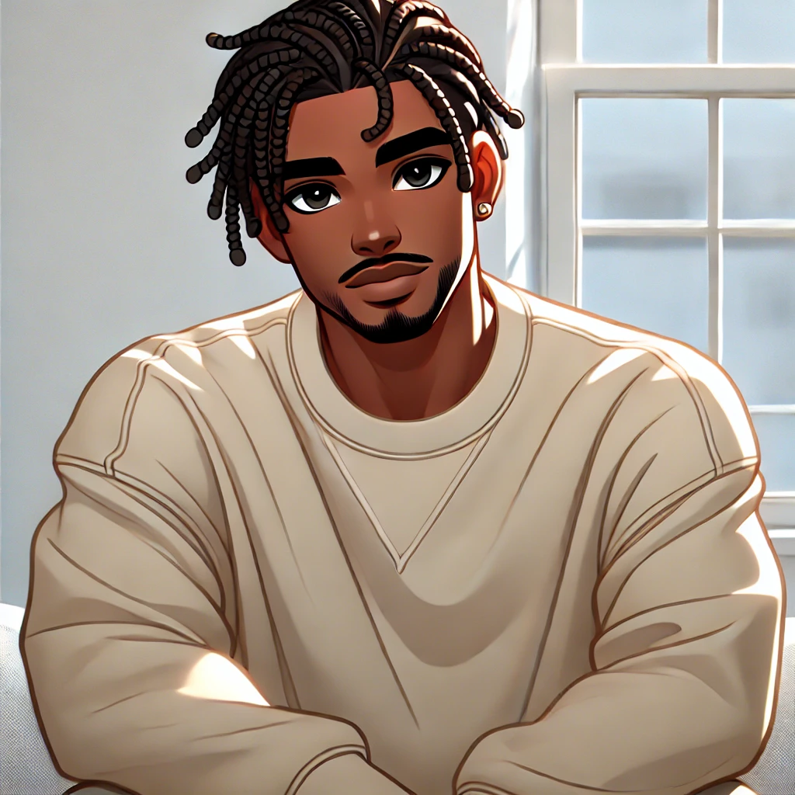

Paul Cai
Fonction : CEO et Fondateur
Paul est le fondateur de Game Switch et la visionnaire derrière notre entreprise. Il a une grande passion pour les jeux vidéo et l'innovation technologique.

Clement Feunard
Fonction : Responsable Marketing
Marie est la responsable marketing de Game Switch. Elle s'assure que notre message atteint les bonnes personnes et fait briller notre marque à chaque lancement.

Lumbala Jr Roger
Fonction : Développeur
Jean est le développeur principal de notre équipe. Son expertise dans le développement de logiciels et son amour des jeux font de lui un membre clé de l'équipe.

Ralph Leboncoin
Fonction : Développeur
Jean est le développeur principal de notre équipe. Son expertise dans le développement de logiciels et son amour des jeux font de lui un membre clé de l'équipe.